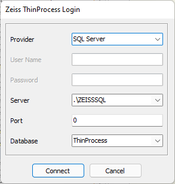

Zeiss ThinProcess Login
Zeiss ThinProcess Login
Navigation: OptiChar Menu Commands > Import Menu > Zeiss ThinPro cess > |
` <zeiss_thinprocess.htm>`__ ` <zeiss_thinprocess.htm>`__ ` <idh_jcamp_dx_options.htm>`__ |
The default Zeiss ThinProcess connection parameters are already preconfigured according to Zeiss ThinProcess specifications. The settings need to be modified only if database access requires non-standard login settings.
